Aquella vez · Manual de español
Unidad 4
La ciudad y la casa

Me encanta mi ciudad
Mi ciudad: Sinea
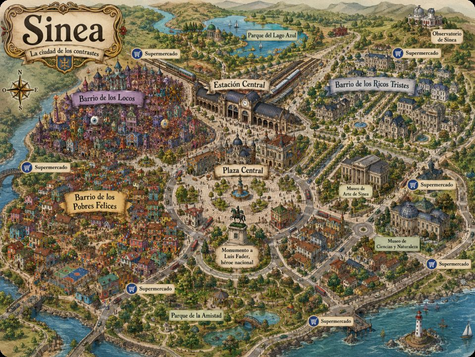
Hola, me llamo Marcos. Vivo en Sinea, una ciudad muy tranquila, pero bastante misteriosa.
En Sinea hay una estación central. También hay una plaza central muy bonita. En la plaza hay un monumento a Luis Fader, el héroe nacional.
En la ciudad hay supermercados, museos y parques. También hay barrios diferentes. Está el barrio de los locos, el barrio de los ricos tristes y el barrio de los pobres felices.
Me gusta vivir en Sinea porque es una ciudad especial. Cada lugar tiene una historia. A veces Sinea es tranquila, pero a veces pasan cosas muy extrañas.
Mi barrio preferido
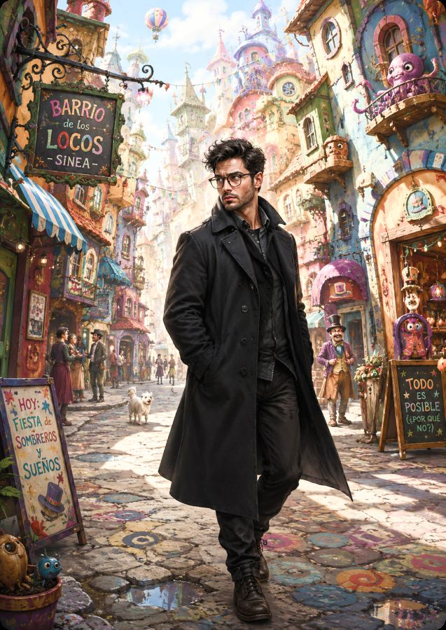
Mi barrio preferido es el barrio de los locos. Es un lugar muy especial de Sinea. No es un barrio normal, pero es muy divertido.
En el barrio de los locos hay casas de muchos colores. Hay calles pequeñas, tiendas raras y cafés con música. También hay personas con ropa extraña, sombreros grandes y muchas ideas divertidas.
En este barrio hay una plaza pequeña. En la plaza hay artistas, músicos y gente que habla mucho. También hay dibujos en las paredes y flores en las ventanas.
En el barrio de los locos no hay silencio. No hay tristeza. Tampoco hay personas aburridas.
Me gusta este barrio porque siempre pasa algo diferente. Para mí, el barrio de los locos es alegre, misterioso y muy vivo.
EjercicioPreguntas de comprensión
- ¿Cuál es el barrio preferido de Marcos?
- ¿Qué hay en el barrio de los locos?
- ¿Cómo son las casas del barrio?
- ¿Qué no hay en el barrio de los locos?
- ¿Por qué le gusta este barrio a Marcos?
EjercicioVerdadero o falso. Escribe V si la frase es verdadera y F si la frase es falsa.
- Marcos vive en Sinea.
- Sinea es una ciudad tranquila y misteriosa.
- En Sinea no hay estación central.
- En la plaza central hay un monumento a Luis Fader.
- En Sinea hay supermercados, museos y parques.
- El barrio preferido de Marcos es el barrio de los ricos tristes.
- En el barrio de los locos hay casas de muchos colores.
- En el barrio de los locos hay silencio.
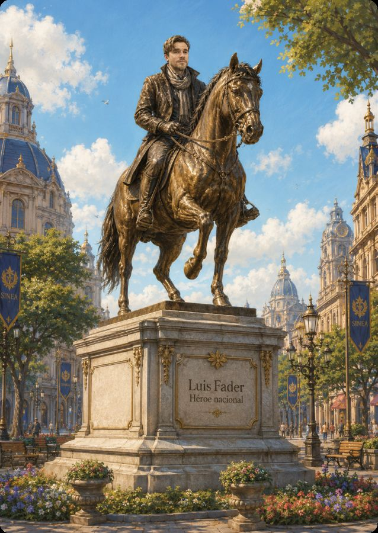
Ejercicio3. Completa con HAY o ESTÁ
1. En Sinea una estación central.
2. La estación central cerca de la plaza.
3. En la plaza un monumento a Luis Fader.
4. El monumento en la plaza central.
5. En Sinea supermercados.
6. El barrio de los locos cerca del centro.
7. En el barrio de los locos casas de muchos colores.
8. La plaza pequeña en el barrio de los locos.
9. En la plaza pequeña artistas y músicos.
10. Marcos en el barrio de los locos.
Ejercicio4. Mira el mapa de Sinea y explica cómo llegar de un lugar a otro
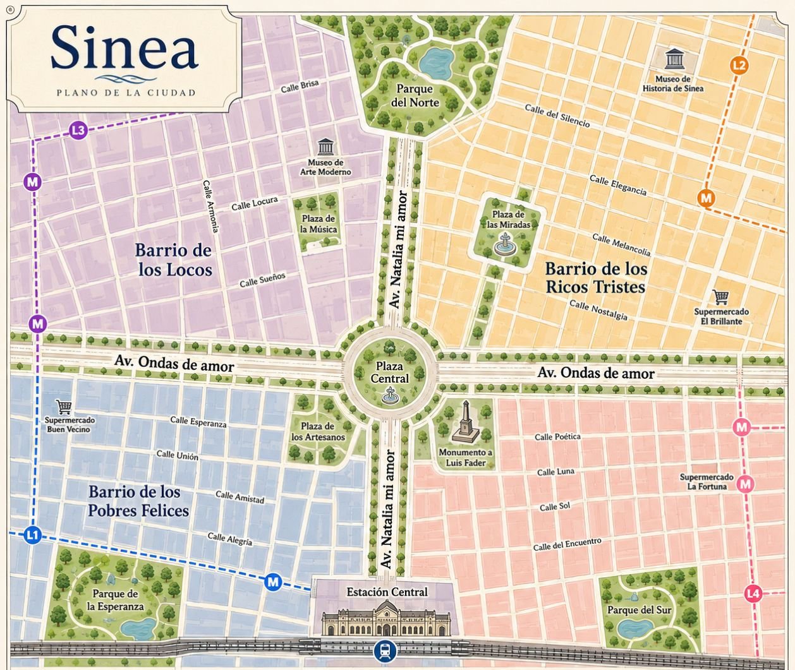
Usa expresiones como: sigue recto / ve derecho · gira a la derecha · gira a la izquierda · cruza la plaza · está al lado de · está cerca de · está enfrente de
Ejemplo: ¿Cómo voy de la Estación Central a la Plaza Central? → Sigue recto por la Av. Natalia mi amor. La Plaza Central está enfrente.
- ¿Cómo llegas de la Estación Central al Monumento a Luis Fader?
- ¿Cómo llegas de la Plaza Central al Barrio de los Locos?
- ¿Cómo llegas del Barrio de los Pobres Felices al Parque de la Esperanza?
- ¿Cómo llegas de la Plaza Central al Barrio de los Ricos Tristes?
- ¿Cómo llegas del Monumento a Luis Fader al Parque del Sur?
- ¿Cómo llegas del Museo de Arte Moderno a la Plaza de la Música?
- ¿Cómo llegas del Supermercado Buen Vecino a la Plaza Central?
- ¿Cómo llegas del Museo de Historia de Sinea al Supermercado El Brillante?
- ¿Cómo llegas del Barrio de los Locos al Parque del Norte?
- ¿Cómo llegas de la Estación Central al Barrio de los Pobres Felices?
En el metro
En el metro de Sinea
Lee el diálogo y contesta las preguntas.
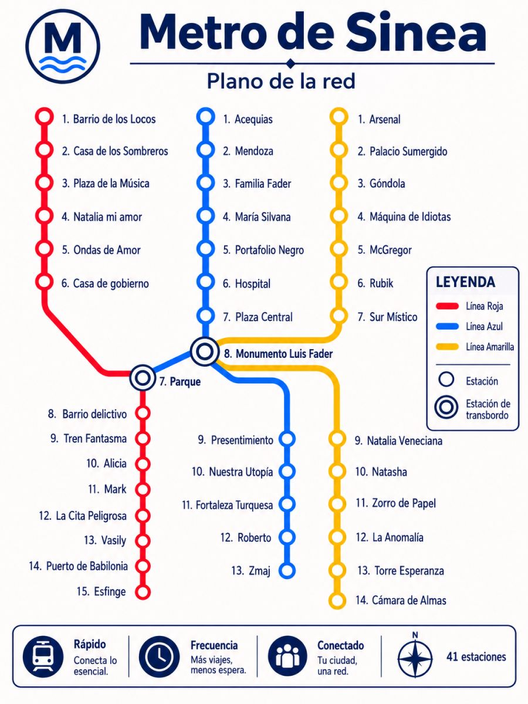
Turista 1Estamos en Zmaj. ¿Cómo vamos a Plaza de la Música?
Turista 2Creo que tomamos la línea azul hasta Parque.
Turista 1Sí, primero vamos en la línea azul hasta Parque.
Turista 2Después cambiamos a la línea amarilla, ¿no?
Turista 1No, amor, eso no es correcto. La línea amarilla no va a Plaza de la Música.
Turista 2Ah, es verdad. Entonces cambiamos a la línea roja.
Turista 1Exacto. En Parque cambiamos a la línea roja.
Turista 2¿Y vamos en dirección a Barrio de los Locos?
Turista 1Sí. Pasamos por Casa de gobierno, Ondas de Amor y Natalia mi amor.
Turista 2Y después llegamos a Plaza de la Música.
Turista 1Perfecto. Entonces: Zmaj, línea azul hasta Monumento Luis Fader, cambiamos a Parque, tomamos la línea roja y después Plaza de la Música.
Turista 2Muy bien. Vamos juntos, así no me pierdo.
Turista 1Sí, pero mira bien el mapa. En Sinea es fácil perderse.
EjercicioContesta verdadero o falso
- Los dos turistas están en Sinea.
- Los turistas están en la estación Zmaj.
- Los turistas quieren ir a Plaza de la Música.
- Primero toman la línea roja.
- Primero toman la línea azul.
- En Parque cambian de línea.
- En Parque cambian a la línea amarilla.
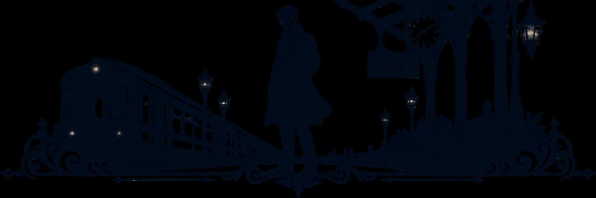
Aprende los números
Gramática: los números del 100 al 1000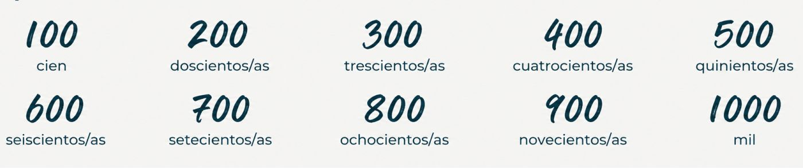
Cómo se forman los números
En español, muchos números se forman uniendo partes pequeñas.
Primero aprendemos las centenas:
100 = cien · 200 = doscientos · 300 = trescientos · 400 = cuatrocientos · 500 = quinientos · 600 = seiscientos · 700 = setecientos · 800 = ochocientos · 900 = novecientos
Después agregamos las decenas y las unidades. Por ejemplo:
125 = ciento veinticinco · 236 = doscientos treinta y seis · 348 = trescientos cuarenta y ocho · 677 = seiscientos setenta y siete · 999 = novecientos noventa y nueve
Cuando el número termina en 00, usamos solo la centena:
200 = doscientos · 400 = cuatrocientos · 800 = ochocientos
Pero cuando hay más números después de 100, usamos ciento:
100 = cien · 101 = ciento uno · 115 = ciento quince · 130 = ciento treinta
Con mil es muy fácil:
1000 = mil · 2000 = dos mil · 3000 = tres mil
Ejemplos:
1492 = mil cuatrocientos noventa y dos
2014 = dos mil catorce
5399 = cinco mil trescientos noventa y nueve
20412 = veinte mil cuatrocientos doce
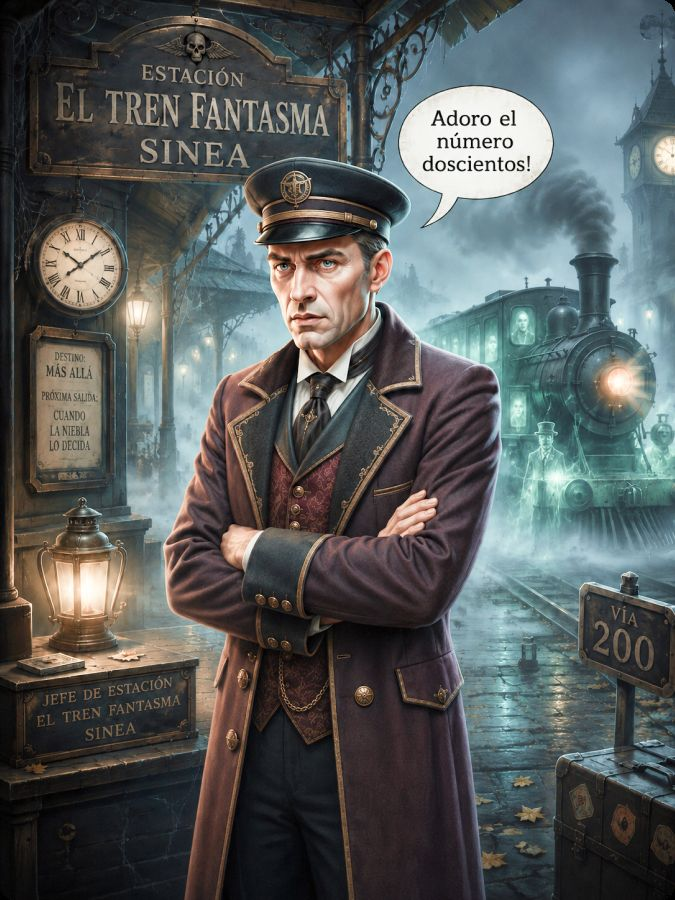
EjercicioEscribe el dictado de números
Mi casa es tu casa
La casa antigua
Lee el diálogo y contesta las preguntas.
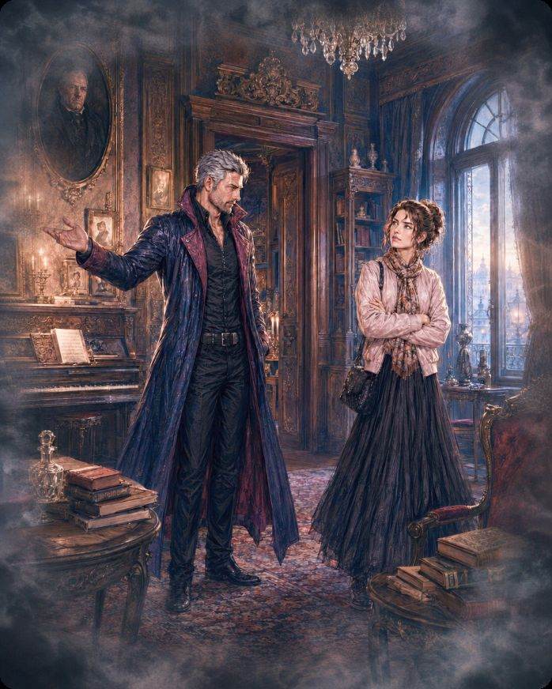
HombreBienvenida a mi casa.
MujerNo me gusta.
Hombre¿No te gusta? Pero es una casa muy antigua de San Petersburgo.
MujerPrecisamente por eso. Es demasiado antigua.
HombreAquí hay una sala grande. Hay cuadros en las paredes, un piano viejo y una lámpara de cristal.
MujerLa sala es oscura. Y la lámpara parece triste.
HombreTambién hay una biblioteca. Tiene muchos libros, mapas antiguos y cartas de mi familia.
MujerHay demasiado polvo. Tus libros parecen fantasmas.
HombreEn el comedor hay una mesa de madera. Es muy elegante. Aquí cenaban mis abuelos.
MujerLa mesa es enorme. Parece una mesa para una reunión de vampiros.
HombreEn el pasillo hay retratos antiguos.
MujerSí, y todos me miran. No me gusta.
HombreArriba hay un balcón. Desde allí se ve una calle tranquila y el cielo de San Petersburgo.
MujerEl balcón es bonito, pero hace frío.
HombreTambién hay una habitación con música. Tengo discos, partituras y un violonchelo.
MujerEl violonchelo me gusta un poco. Pero solo un poco.
HombreEn la cocina hay té, café y pasteles.
MujerEl té está frío. El café es fuerte. Y los pasteles son sospechosos.
HombreDe acuerdo, no te gusta. Eres libre de irte.
MujerNo puedo.
Hombre¿Por qué?
MujerPorque en realidad me gusta tu casa.
Hombre¿De verdad?
MujerSí. Es rara, antigua, oscura y fría… pero me gusta.
HombreEntonces no es tan horrible.
MujerNo. Y además… me gustas tú.
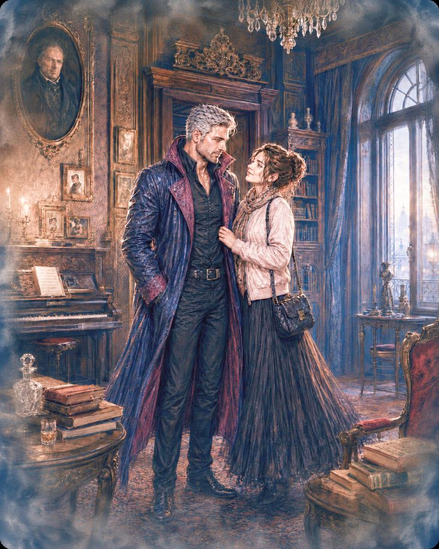
EjercicioPreguntas sobre el diálogo
- ¿Dónde están los personajes?
- ¿Qué dice el hombre al principio?
- ¿A la mujer le gusta la casa al principio?
- ¿Qué hay en la casa del hombre?
- ¿Por qué la mujer no se va?
- ¿Qué le dice la mujer al hombre al final?
EjercicioEscribe V si la frase es verdadera y F si la frase es falsa.
- Los personajes están en una casa antigua.
- La casa está en San Petersburgo.
- Al principio, a la mujer le gusta mucho la casa.
- En la casa hay una sala grande.
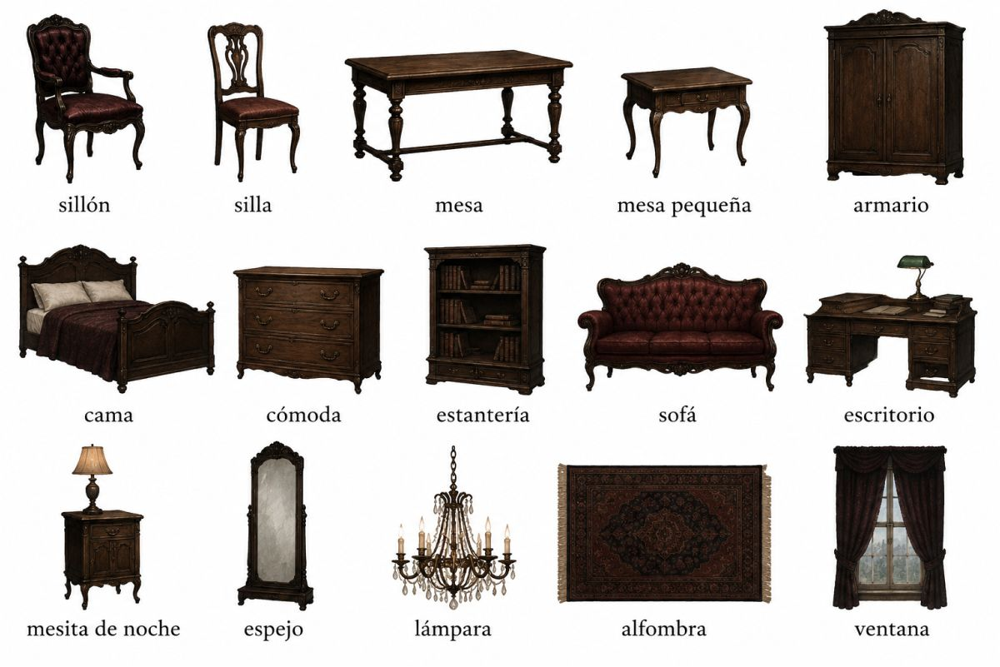
EjercicioAprende los nombres de los muebles y une con su descripción
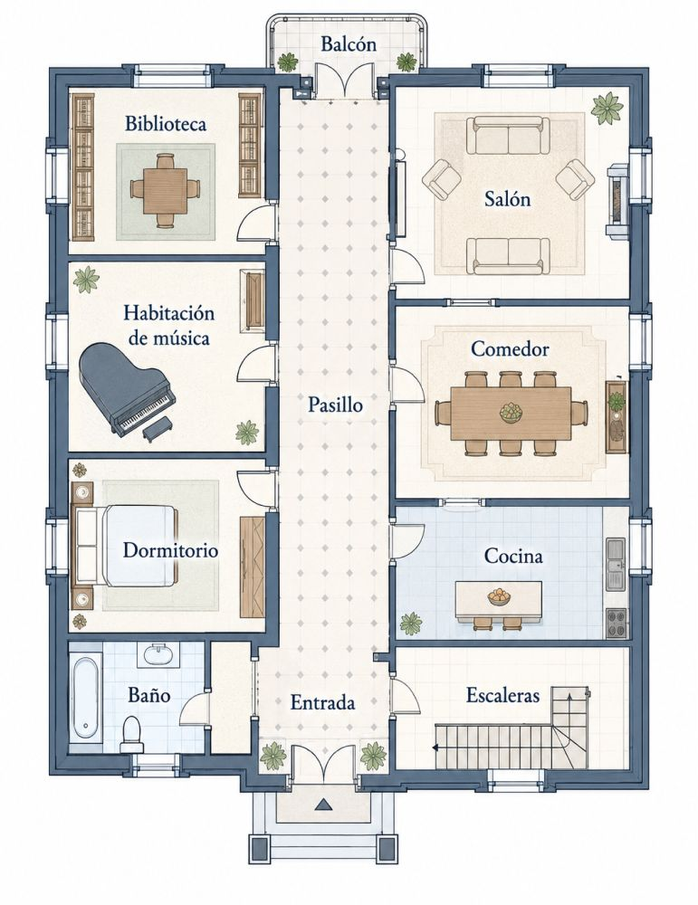
a. Sirve para dormir.
b. Sirve para guardar la ropa.
c. Sirve para sentarse.
d. Sirve para comer o trabajar.
e. Sirve para poner libros.
f. Sirve para mirar tu cara.
g. Sirve para iluminar la habitación.
h. Sirve para descansar en el salón.
i. Sirve para escribir, leer o trabajar.
j. Sirve para poner una lámpara al lado de la cama.
k. Sirve para guardar ropa pequeña.
l. Sirve para mirar la calle o el jardín.
m. Sirve para decorar el suelo.
Ejercicio¿Qué significa esta frase? Explica con tus propias palabras
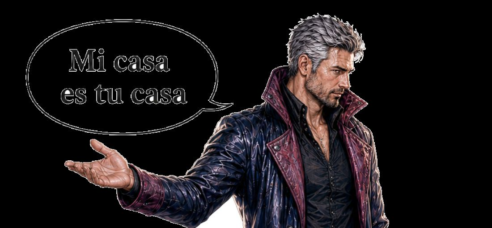
Gramática
Ejercicio1. HAY / ESTÁ. Completa con HAY o ESTÁ.
a. En Sinea una estación central.
b. La estación central en el centro.
c. En la plaza central un monumento.
d. El monumento a Luis Fader en la plaza.
e. En Sinea museos y supermercados.
f. El barrio de los locos cerca de la plaza.
g. En la casa una biblioteca.
h. La biblioteca al lado del pasillo.
i. En el salón un sofá.
j. El sofá en el salón.
Ejercicio2. EL / LA / LOS / LAS. Completa con el artículo correcto.
a. ciudad
b. estación
c. museo
d. plaza
e. monumento
f. casa
g. biblioteca
h. pasillo
i. cama
Ejercicio3. UN / UNA / UNOS / UNAS. Completa con UN, UNA, UNOS o UNAS.
a. En Sinea hay museo.
b. En la plaza hay monumento.
c. En la casa hay biblioteca.
d. En el salón hay sofá.
e. En la habitación hay cama.
f. En la biblioteca hay libros.
g. En la cocina hay mesa.
h. En la calle hay supermercados.
i. En el barrio hay casas de colores.
j. En el pasillo hay retratos antiguos.
Ejercicio4. SER / ESTAR. Completa con ES o ESTÁ.
a. Sinea una ciudad misteriosa.
b. La estación central en Sinea.
c. El barrio de los locos muy divertido.
d. El monumento en la plaza central.
e. La casa del hombre antigua.
f. La biblioteca grande.
g. El sofá en el salón.
h. La cocina pequeña.
i. Marcos en el barrio de los locos.
j. La plaza central bonita.
EjercicioMira la imagen y escribe V (verdadero) o F (falso)
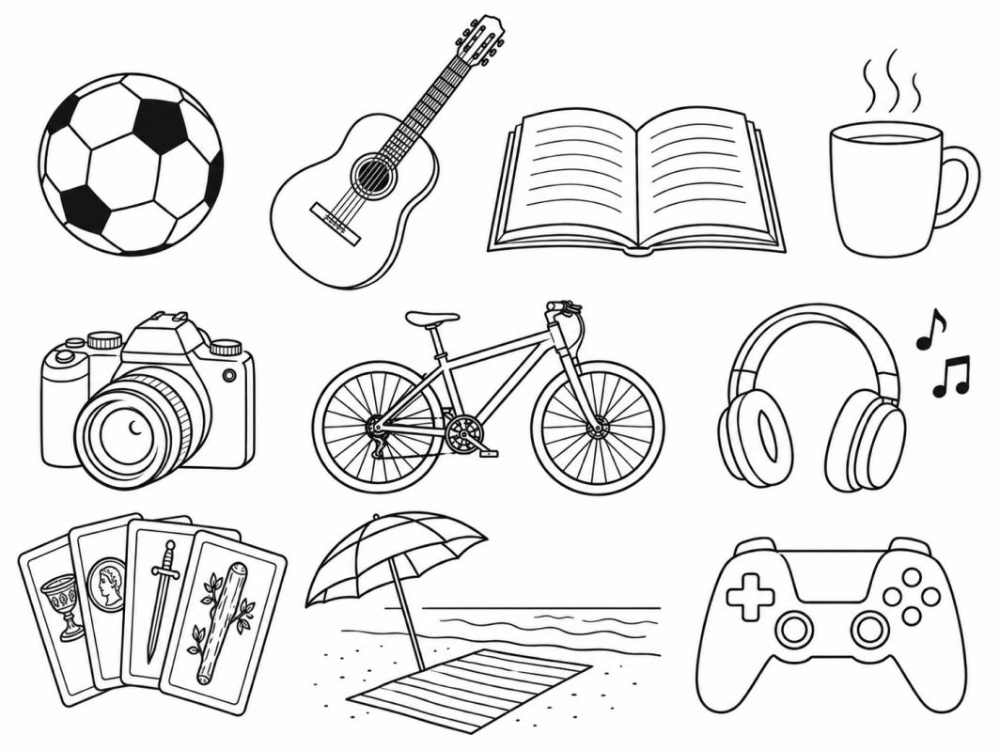
- En la imagen hay una cámara fotográfica.
- La cámara está a la izquierda del libro.
- El balón de fútbol está a la izquierda de la guitarra.
- El libro está entre la guitarra y la taza.
- La bicicleta está debajo del libro.
- Los auriculares están a la izquierda de la bicicleta.
- Las cartas están debajo de la cámara.
- La sombrilla está a la derecha de las cartas.
- El mando de videojuegos está debajo de los auriculares.
- La taza está a la izquierda del libro.
Ejercicio5. Los números: 100 – 1000. Escribe el número con palabras.
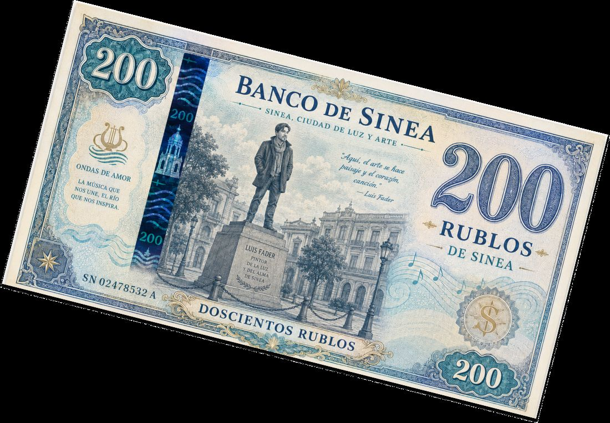
a. 100
b. 200
c. 300
d. 400
e. 500
f. 600
g. 700
h. 800
i. 900
j. 1000
Ejercicio6. Los números en frases. Completa con el número correcto en palabras.
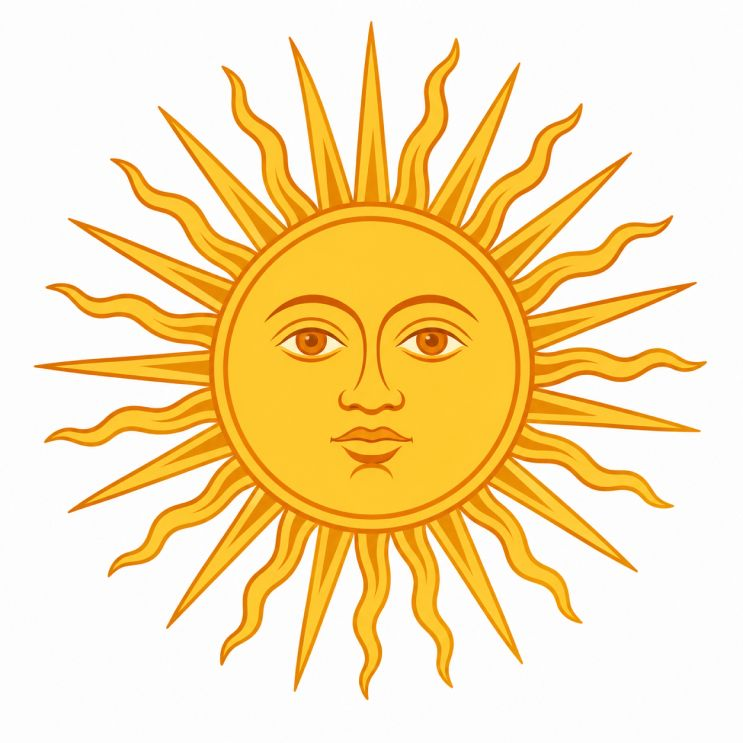
a. En la ciudad hay 100 casas. En la ciudad hay casas.
b. En el museo hay 200 cuadros. En el museo hay cuadros.
c. En la biblioteca hay 300 libros. En la biblioteca hay libros.
d. En la plaza hay 400 personas. En la plaza hay personas.
e. En Sinea hay 500 historias. En Sinea hay historias.
f. En el barrio hay 600 ventanas. En el barrio hay ventanas.
g. En la estación hay 700 pasajeros. En la estación hay pasajeros.
h. En la casa hay 800 objetos antiguos. En la casa hay objetos antiguos.
Años importantes en la historia de España e Hispanoamérica
1492 — Cristóbal Colón llega a América.
1810 — Comienzan varios movimientos de independencia en Hispanoamérica.
1816 — Argentina declara su independencia.
1821 — México declara su independencia.
1898 — España pierde sus últimas grandes colonias en América.
1936 — Comienza la Guerra Civil Española.
1978 — España aprueba una nueva Constitución.
1983 — Argentina recupera la democracia.
Cultura
Las ciudades de estilo español
Lee el texto.
Muchas ciudades de Hispanoamérica tienen un estilo español. En el centro hay una plaza central. La plaza central es el corazón de la ciudad.
Cerca de la plaza hay edificios importantes. Por ejemplo, hay una iglesia, una casa de gobierno, un museo o un banco. También hay cafés, tiendas y calles con mucha gente.
Alrededor de la plaza central hay otras plazas pequeñas. Estas plazas se llaman plazas aledañas. Son plazas cercanas. En ellas hay árboles, bancos, flores y personas que caminan.
Las calles forman cuadras. Una cuadra es una parte de la calle entre dos esquinas. En muchas ciudades, las calles son rectas y ordenadas. Por eso es fácil caminar y encontrar lugares.
Los españoles construyeron muchas ciudades con este modelo. Primero elegían un lugar para la plaza central. Después construían las calles alrededor. Luego aparecían las casas, los edificios públicos, los mercados y los barrios.
Por eso, en muchas ciudades podemos decir:
En el centro hay una plaza. La iglesia está cerca de la plaza. El museo está al lado del banco. La casa de gobierno está enfrente de la plaza. El mercado está a dos cuadras.
Este estilo es antiguo, pero todavía existe. Muchas ciudades modernas conservan su plaza central, sus calles rectas y sus barrios alrededor.
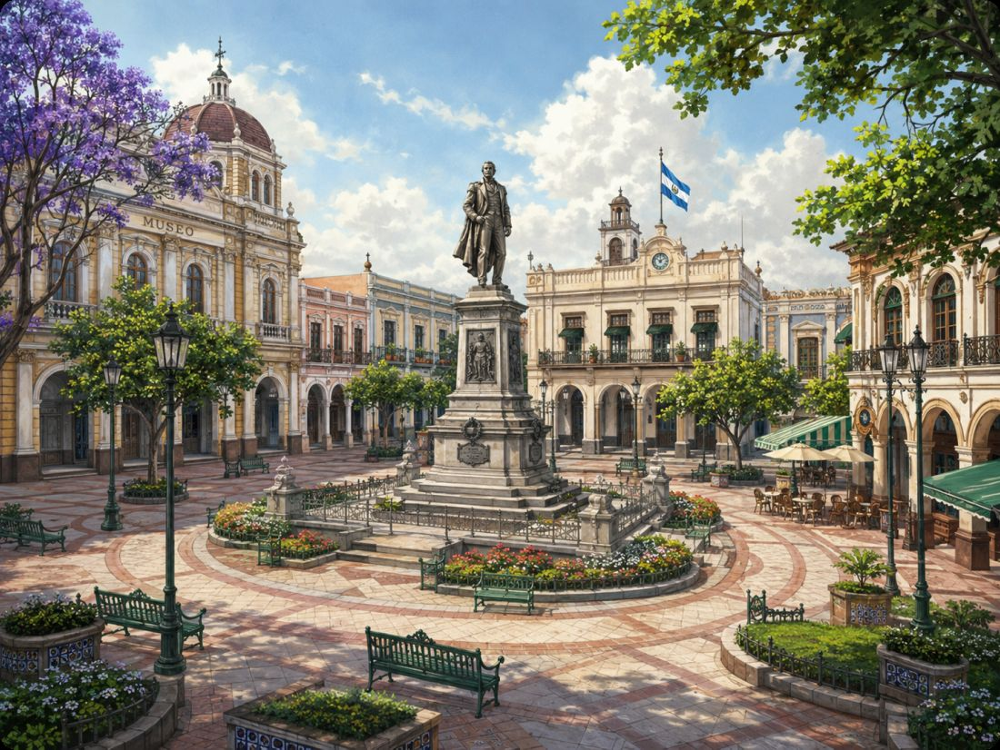
Ejercicio2. Preguntas de comprensión
- ¿Qué hay en el centro de muchas ciudades de estilo español?
- ¿Por qué la plaza central es importante?
- ¿Qué edificios importantes puede haber cerca de la plaza central?
- ¿Qué son las plazas aledañas?
- ¿Qué hay en las plazas pequeñas?
- ¿Qué es una cuadra?
- ¿Cómo son las calles en muchas ciudades de estilo español?
- ¿Qué construían primero los españoles?
- ¿Qué aparecía después de la plaza y las calles?
- ¿El mercado puede estar cerca o lejos de la plaza?
- ¿Este estilo de ciudad es antiguo o moderno?
- ¿Muchas ciudades modernas todavía conservan la plaza central?
Historieta
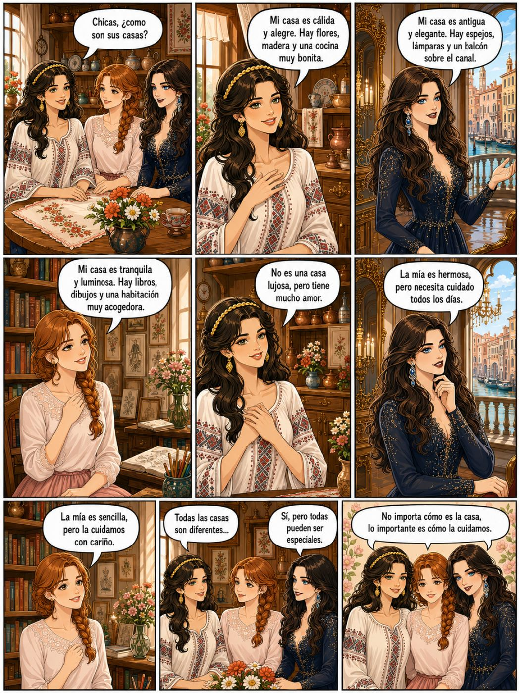
Notas importantes
- Cuadra
- tramo de una calle entre dos esquinas.Ejemplo: La escuela está a dos cuadras de la plaza.
- Caminar
- ir de un lugar a otro a pie.Ejemplo: Me gusta caminar por la ciudad.
- Elegir
- escoger una opción entre varias.Ejemplo: Voy a elegir el camino más corto.
- Plazas aledañas
- plazas que están cerca de un lugar principal o alrededor de una zona.Ejemplo: Después visitamos las plazas aledañas al centro histórico.
- Descansar
- detener una actividad para recuperar energía o tranquilidad.Ejemplo: Nos sentamos en un banco para descansar.
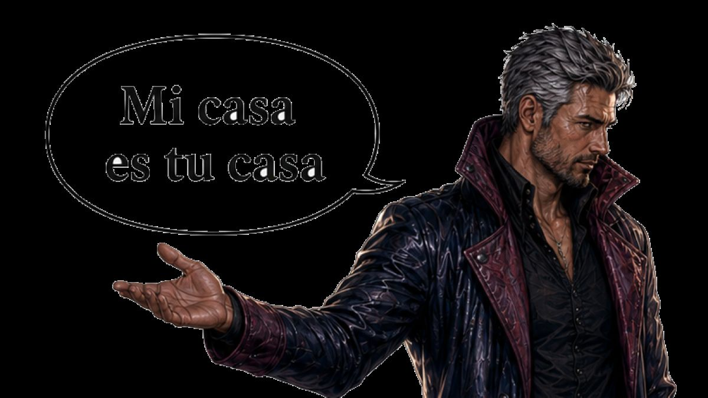